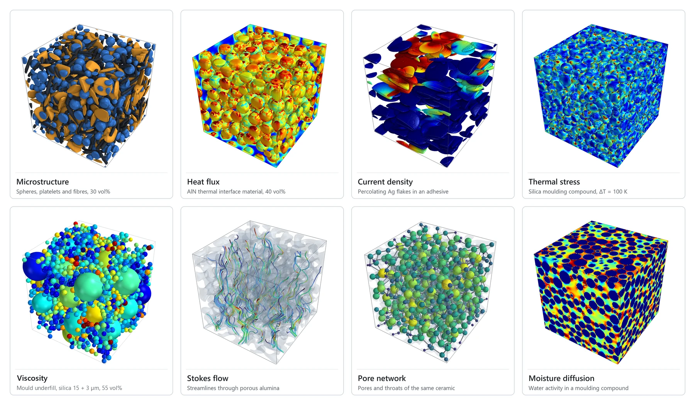
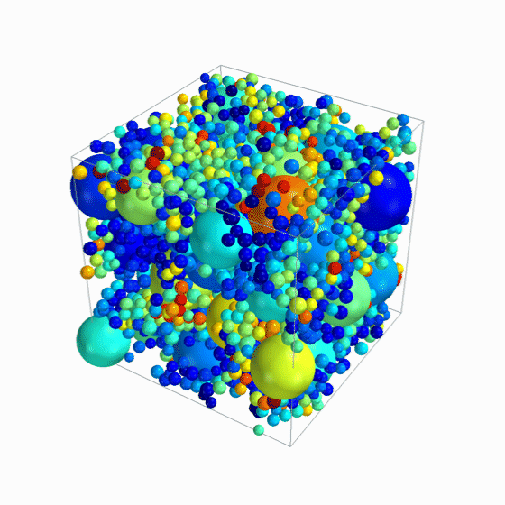
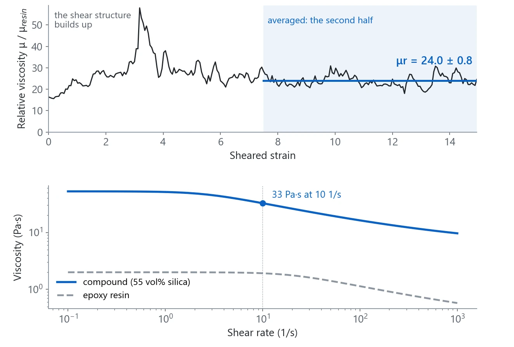
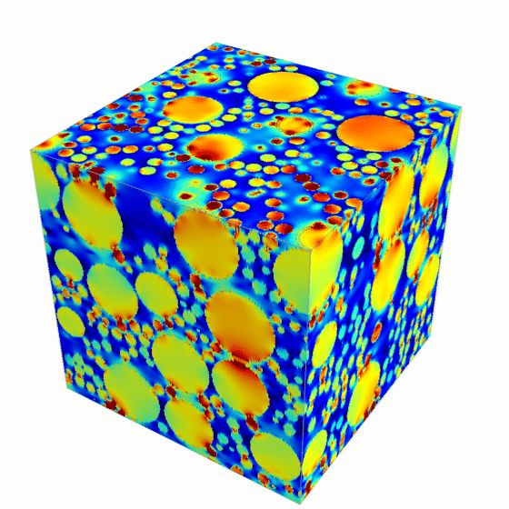
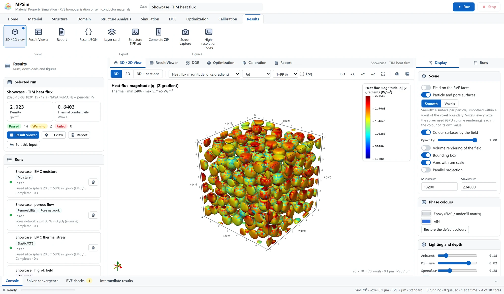

MPSim · Material Property Simulation
Effective properties of semiconductor materials computed from their microstructure — the 3D structure is generated, the physics is solved inside it, and you see where heat, current, stress and resin flow actually go.

How it works
MPSim puts the whole workflow of a digital-material study in one browser workspace. It runs on one PC, or on a server that the rest of the network opens in a browser; no data leaves the machine.
Build the microstructure
Fillers of any shape, size distribution and orientation, pores, coatings, hollow particles, multi-filler blends and thin films, on a voxel representative volume element (RVE) whose size is checked against measured criteria.
Solve the physics
Validated open-source solvers — periodic finite volume, FFT-accelerated voxel finite elements, NASA PuMA, PoreSpy and openEMS — compute the effective tensors, with rigorous bounds alongside.
See inside
Interactive 3D and 2D views of every field, animated field lines, publication figures, a single-file HTML report and every number traceable to the method that produced it.
Analyses
Written for the materials of semiconductor packaging, devices and process equipment — moulding compounds, underfills, thermal interface materials, conductive adhesives, dielectrics, EMI absorbers, porous ceramics and filters.
Thermal and electrical
- Conductivity tensors, interfacial and contact resistance
- Percolation of conductive fillers
Dielectric, magnetic, EMI
- Dk, Df, field enhancement, permeability
- Shielding effectiveness with a full-wave check
Elasticity and CTE
- Stiffness, engineering constants, CTE tensor
- Thermal stress; α1 / α2 above Tg
Viscosity and flowability
- Viscosity of uncured compounds, flow curves
- Particle dynamics of the fillers: the particle-size effect and shear thinning, on CPU or GPU
- Maximum packing, underfill filling time, settling
Moisture
- Moisture diffusivity and saturated uptake
- Uptake curve of a part, hygroscopic swelling (CME)
Flow, filtration, acoustics
- Permeability, filtration efficiency, tortuosity
- Acoustic absorption, radiative extinction
Morphology
- Porosity, size distributions, porosimetry
- Pore networks, grain statistics, percolation paths
Calibration
- Unknown material values from measurements, a filler's surface from a measured viscosity
- Credible intervals, identifiability, next measurement
DOE and optimisation
- Factorial and Latin-hypercube studies, filler shares, one fixed grid for every case
- Linked inputs: one factor sets several entries (x, 0.8·x, sqrt(x1·x2))
- What each case really holds beside its inputs
- Gaussian-process surrogates, Sobol indices, NSGA-II
Flow of filled compounds
Underfills and mould compounds are filled to 50–65 vol% and must still flow into gaps of tens of micrometres. MPSim shears the compound's own particles in the resin — lubrication between neighbours, contacts with friction, van der Waals attraction, every particle free to move and turn — and reads the viscosity from the stress they carry.


From flow to the cured part
A compound cures where its flow leaves it. MPSim shears the packing in the resin with the same particle dynamics, cures it as it lies, and solves heat, expansion, stiffness, Dk/Df and moisture on that one structure - every property a package engineer asks of an underfill, from one model.

The workspace
A ribbon that follows the order of a study, the inputs on the left, the 3D view, Result Viewer or report in the centre, and what is drawn on the right.

Verification
The engine is checked against problems whose answers are known, and every run reports its own checks — RVE size, resolution, particle count, convergence and rigorous bounds — as passed, warning or failed, with the reason.
Presets
- EMC · epoxy + fused silica
- Underfill · epoxy + silica
- MUF flowability · bimodal silica
- MUF from flow to the cured part
- EMC reliability · moisture, swelling, above Tg
- TIM · silicone + Al₂O₃ with interfacial resistance
- TIM · epoxy + AlN
- Hybrid TIM · Al₂O₃ + AlN blend with contact resistance
- Thermal sheet · h-BN platelets
- Thin film · polyimide + h-BN
- Conductive adhesive · Ag flakes
- Sintered silver die attach
- EMI shielding · Ni rods
- Noise-suppression sheet · Sendust flakes
- Low-Dk · hollow silica
- High-k · BaTiO₃
- Low CTE · ZrW₂O₈
- Porous low-k film
- Porous ceramic · Al₂O₃
- UPW membrane · PTFE
- Sintered gas filter · SUS316L
- Fibrous insulation · E-glass
- MUF DOE · Al₂O₃ + BN platelet stacks
- Heat spreader · Cu + diamond
- Power-module baseplate · AlSiC
- mmWave substrate · PTFE + silica
- PCB thermal vias
- Glass core substrate · Cu TGVs
- Die-attach solder voids
- Package-level power inductor · carbonyl iron
Against published data
| Preset and source | Reported | Computed |
|---|---|---|
| Cu + diamond 50 vol%, 400 µmWang et al., Materials 2025 [1] | 640 W/m·K | 644 W/m·K (interface 12.5 MW/m²K) |
| AlSiC 63 vol%Guo et al., J. USTB 2014 [2] | 178 W/m·K, 8.21 ppm/K | 189 W/m·K, 8.84 ppm/K |
| PTFE + silica 60 wt%Murali et al., Compos. A 2009 [3] | Dk 2.9 | Dk 3.01 |
| FR-4 + Cu-plated thermal viasexact solution [4] | kz 9.285 W/m·K | 9.285 W/m·K |
| Glass core + Cu TGVsexact solution [4] | kz 36.0 W/m·K | 36.03 W/m·K |
| SAC305 + 15 % voidsMaxwell 1873 (upper bound) [5] | 79.1 % of dense | 77.1 % |
| Carbonyl iron + epoxy 54 vol%Sugawa et al., IEEE Trans. Magn. 2013 [6] | μr 7.5 (printed core) | μr 5.1 (separate spheres; a printed core forms chains) |
- Q. Wang, Z. Ye, L. Liu, J. Bai, Y. Zhao, Q. Hu, H. Liu, L. Hu, X. Guo, Y. Xiao, W. Cao, Z. Yang, “High thermal conductivity diamond–copper composites prepared via hot pressing with tungsten-coated interfacial layer optimization”, Materials 18 (16), 3882 (2025). doi:10.3390/ma18163882 — 400 µm diamond, 50 vol%: 640 W/m·K.
- M. Guo, J. Liu, C. Jia, S. Guo, Y. Li, H. Zhou, “Microstructure and properties of SiCp/Al electronic packaging materials fabricated by pseudo-semi-solid thixoforming”, Journal of University of Science and Technology Beijing 36 (4), 489–495 (2014). doi:10.13374/j.issn1001-053x.2014.04.011 — as tabulated in L. Lai et al., Micromachines 14 (8), 1491 (2023), Table 2, doi:10.3390/mi14081491.
- K. P. Murali, S. Rajesh, O. Prakash, A. R. Kulkarni, R. Ratheesh, “Preparation and properties of silica filled PTFE flexible laminates for microwave circuit applications”, Composites Part A 40 (8), 1179–1185 (2009). doi:10.1016/j.compositesa.2009.05.007 — 60 wt% micron silica, X band.
- Exact solution: parallel conduction through straight vias that span the board, k_z = f·k_Cu + (1 − f)·k_laminate for an area fraction f of copper
- J. C. Maxwell, A Treatise on Electricity and Magnetism, vol. 1, Clarendon Press, Oxford (1873), Art. 314 — insulating spheres: k/k_m = 2(1 − φ)/(2 + φ), an upper bound at this content.
- Y. Sugawa, K. Ishidate, M. Sonehara, T. Sato, “Carbonyl-iron/epoxy composite magnetic core for planar power inductor used in package-level power grid”, IEEE Transactions on Magnetics 49 (7), 4172–4175 (2013). doi:10.1109/TMAG.2013.2250925 — screen-printed 54 vol% core.
Download and install
PC without internet
Download MPSim-…-offline-win64.zip from the
latest release. It carries the official Python
runtime, every wheel including NASA PuMA, and openEMS. Unzip to a short path such as C:\MPSim, run
1_INSTALL_OFFLINE.bat, then 2_RUN_LOCAL.bat.
PC with internet and conda
git clone https://github.com/HyoseokByun-opt/MPSim.git C:\MPSim
cd C:\MPSim
1_INSTALL.bat
2_RUN_LOCAL.batUser guides, 162 pages in English and 151 in Korean: English (PDF) · Korean (PDF). Every simulation chapter explains how the property is measured, how MPSim computes it and how to read the results.
Cite
If you use MPSim in published work, please cite it together with the solvers that produced the results (listed in the README).
@software{byun_mpsim,
author = {Byun, Hyoseok},
title = {{MPSim: Material Property Simulation}},
version = {5.2.5},
year = {2026},
publisher = {Zenodo},
doi = {10.5281/zenodo.23120194},
url = {https://github.com/HyoseokByun-opt/MPSim}
}Author
Hyoseok Byun — GitHub · LinkedIn
Declaration of AI assistance. The code, the verification tests and the user guides were written with the assistance of Claude (Anthropic), an AI assistant, under the author's direction. The author reviewed and edited the output and takes full responsibility for the content.